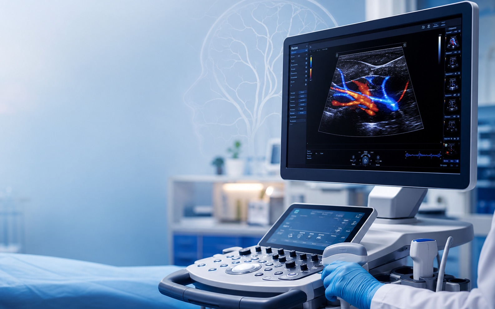
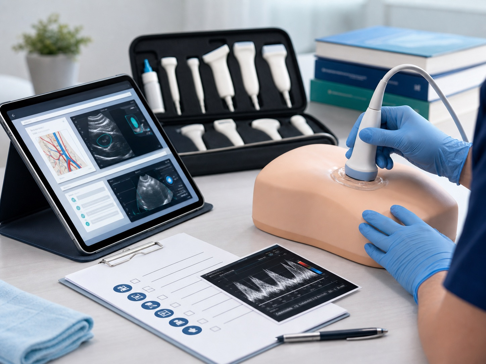
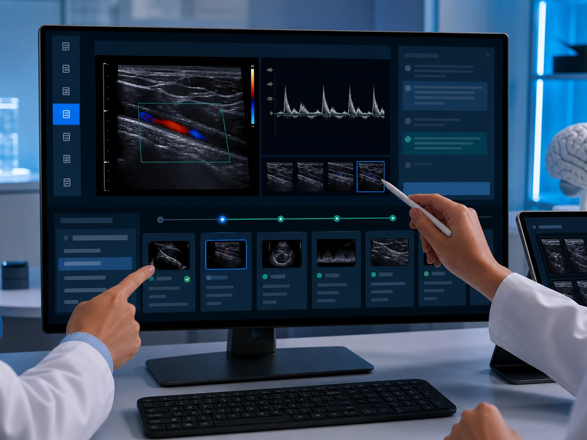

Clinical training infrastructure
The learning platform for neurosonology and clinical ultrasound.
C-LOOP turns complex ultrasound education into a structured, measurable training experience: guided pathways, real cases, hands-on practice and updated clinical resources in one place.

Why it matters
Ultrasound training is too fragmented. C-LOOP makes it teachable.
Learners often jump between lectures, folders, videos and informal supervision. C-LOOP organizes the full journey from concept to scan, from scan to interpretation, and from interpretation to confident clinical use.
One clinical curriculum
Pathways connect anatomy, acquisition, Doppler interpretation and real-case review.
Practice built in
Hands-on sessions and checklists turn passive content into measurable skill development.
Designed to scale
Resources, updates and training logic can be reused across departments and learning cohorts.
Pathways
A clinical curriculum, not a link directory.
Each pathway combines theory, case-based reasoning, hands-on work and support materials, so the learner always knows what to do next.
Core
Fundamental and intermediate
Neurosonology
Vascular anatomy, acoustic windows, transcranial Doppler, pattern interpretation and key clinical scenarios.
- Guided tutorials
- Reviewed cases
- Acquisition checklists
Echo
Imaging and practice
Clinical ultrasound
Foundations for probe orientation, image quality, measurements and structured exam reading.
- Short videos
- Essential documents
- Hands-on training
Monitor
Clinical application
Doppler and monitoring
Practical interpretation for follow-up, monitoring and multidisciplinary case discussion.
- Protocols
- Traces to read
- Clinical decisions
AI
Tools and future
AI and reporting
Digital workflows for structured reports, case archives, checklists and quality improvement.
- Report templates
- Prompt workflows
- Updated resources
Method
Learn, scan, review, improve.
-
01
Understand
Short lessons, tutorials and conceptual maps to get oriented quickly.
-
02
Scan
Probe handling, acquisition checklists and live practice make technique explicit.
-
03
Review
Images, traces and reports become structured interpretation exercises.
-
04
Improve
Feedback, recommendations and updates close the training loop.
Product experience
Built around the way clinicians actually learn.
C-LOOP combines high-signal content, supervised practice and case review. The result is a platform that feels practical for learners and credible for clinical teams.
Open resources
